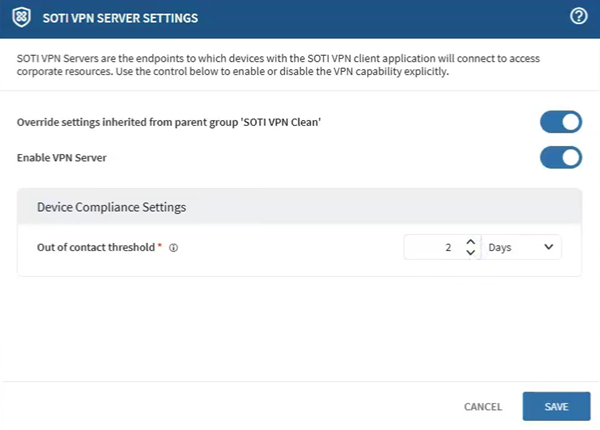

Configuring SOTI VPN Server Settings
- From SOTI MobiControl, open the Devices view.
- From the list of devices, select a SOTI VPN server. A window listing its device properties opens.
- Navigate to the Configurations tab and scroll to the Advanced Configurations section.
-
From the Advanced Configurations list, select
SOTI VPN Server
Settings. The SOTI VPN Server
Settings window opens.

- Optional: Enable Override Settings Inherited From Parent Group.
- Toggle on Enable VPN Server to enable VPN servicing capabilities on the selected server.
- Optional: Set an Out of Contact Threshold value to specify compliance requirements for its clients. If a device remains disconnected for longer than the specified period from SOTI MobiControl, VPN services are no longer offered until it reconnects. After reconnecting, the new key may take a few minutes to propagate across the SOTI VPN servers.